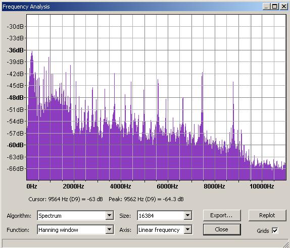

Tutorial - Making Ringtones
From Audacity Manual
Most modern cell phones can be customized with the user's own ring and answer tones. This tutorial will help you to prepare suitable sound files. Many different kinds of file formats are used in cell phones, some of which cannot be created by Audacity. You need to research what file format(s) your phone accepts and how to upload it to the phone before you start to prepare the sound file. See our advice below and always consult your phone manual if in doubt.
What type of file does your phone require?
You need to check what type of file format your phone requires for its ringtones and whether the file needs to be mono or stereo.
There are many different ringtone formats in existence but they fall into three main categories:
- Music ringtones - digitally sampled audio files including MP3 and WAV formats supported by Audacity, plus other formats like AMR and QCP.
- Polyphonic - multiple notes at the same time; some phones can play true MIDI files, others rely on sp-midi or .mmf formats.
- Monophonic - just one note at a time, usually RTTL format. If you want a ringtone in this format it's often easiest to simply use the phone's keypad to enter it if the phone supports that.
Most modern PDA phones (computer phones) will support music ringtones, older phones are likely to support polyphonic ringtones, really old phones will only support monophonic ringtones.
Choose the ringtone source
Existing audio file
The source for your ringtone will most likely be an audio file on your computer. Click , select the file you want and click . Audacity can import MP3, MP2, WAV, AIFF, OGG and FLAC files (and MP4 files on Mac OS X) without additional libraries.
To import other file types (including MP4 on Windows and Linux) you can install the optional FFmpeg library. On Linux it may sometimes be more convenient to use the system FFmpeg or mplayer at the command-line to convert other file types to 16-bit 44100 Hz WAV before importing the file into Audacity.
Recording an audio file
- You may wish to record you cat/dog/partner or any other sound with a microphone for use as a ringtone.
- Alternatively, you can play any audio file on your computer (including purchased files), a CD, or any other sound on your computer including sounds playing over the internet, and record the sound. This is not the highest quality way to grab the sound from a CD or from a purchased file, but it is probably adequate for making a ringtone as quality often needs to be compromised in a ringtone to make the file size smaller. If you want to grab a perfect digital copy of the CD track, or you cannot record it easily, extract it digitally to WAV or .AIFF as described at Importing data from CDs. To make a perfect copy of a purchased file, burn it to an audio CD in the application licensed to play it, then extract the CD track in the same way.
Edit your chosen ringtone
- Click and import your source file; this can be any audio file Audacity can open.
- Select the portion of audio you want to use for your ringtone (say 15-20 seconds). To do this, click in the audio track and drag a selection area to left or right with your mouse - you can see the length of the selected audio in the Timeline above the track. Many phones will loop the ringtone automatically (repeat it over and over), so choose your selection area with that in mind. To hear your selection play looped in Audacity hold down SHIFT while clicking the green Play button
 or use the SHIFT + SPACE keyboard shortcut. To stop playback, press the SPACE or click the yellow Stop button
or use the SHIFT + SPACE keyboard shortcut. To stop playback, press the SPACE or click the yellow Stop button  .
.
- Click ; this will remove the rest of the audio, leaving only the section you have selected. If you want to use the whole file, then skip this step.
- Add any effects you may want to the ringtone by clicking in the Track Control Panel where the mute/solo buttons are to select all the track (you may also use the Edit menu or a keyboard shortcut), then choose from the Effect menu. Be sparing with effects, but some you may want to consider are:
Equalization
Many phone speakers cannot reproduce very low frequencies so consider attenuating them (a gradual reduction in the amplitude of the sound level), especially if you are making a ringtone from an original high quality music file. On opening you'll notice a horizontal line at 0 dB, meaning that at that position, no changes are made to the volume of any frequencies. A curve can be created using the mouse, clicking at various points above or below the line. For ringtones, bring the line down to -24 dB on the vertical axis for the low frequencies from 30-300 Hz on the horizontal axis. You may want to increase the lower frequencies from 300 Hz to say 600 Hz by dragging them above 0 dB, then reduce the highest frequencies above say 10,000 Hz. This should make the sound somewhat richer and less "tinny" on a small cellphone speaker by emphasizing the frequency range it can reproduce best.
You can view the sound level in the different frequency bands in your ringtone by clicking . Here is an example spectrum plot from Audacity 2.x for the Nokia original ringtone Hummingbird.aac (47 kbps, 22050Hz, SBR+PS, Mono) converted to WAV (Mono, 22050Hz, 16 bits). This ringtone is quite acute so you can hear the phone from far, something that is essential for a well-made ringtone.
- 
Compressor
Using the will reduce the difference between high and low volume which allows you to make the ringtone louder overall. This suits small cellphone speakers which may not be able to handle large changes in dynamic range. You'll probably want to move the Ratio slider to right of its default setting of 2:1 to give stronger compression.
Hard Limiter
Instead of Compressor you can try to reduce the dynamic range by clipping the maximum volume down to -3 dB. Set the Hard Limiter to a "dB limit" of -3 dB, "Wet Level" to 1.0 and "Residue Level" to 0.0. Now, just the same as when you amplify to -3 dB after compression, you will get no signal above -3 dB, but you will get a more extreme reduction in dynamic range than with compressor. There is a risk of harsh sound when using Hard Limiter to clip the maximum volume. If the result sounds distorted during loud parts, try raising the "Residue level".
Convert stereo to mono
Irrespective of the required file format many phones will want mono ringtone files. If the track you are editing is stereo the next step is to convert it to mono.
To convert from stereo to mono click in the Track Control Panel to select the audio, press the keyboard shortcut CTRL + A (or CMND + A on a Mac) or select the menu item, then select the menu item which mixes in data from both channels to mono without distortion.
Export the file from Audacity
Use the Export Audio dialog to export your custom ringtone to various formats.
You can export to 16-bit PCM WAV by choosing "WAV (Microsoft) 16 bit PCM" in that dialog.
You can export to the smaller-sized MP3 format by adding the optional LAME library to your computer then choose "MP3 Files" in the Export Audio dialog.
Phones requiring other formats
If you add the optional FFmpeg library to your computer, you can export directly from Audacity to some additional mobile phone formats: AMR (narrow band), GSM 6.10 WAV (mobile), M4A (AAC) and M4R (AAC) (for M4R, add .m4r after the file name when you export). Steps:
- Set the required sample rate in the Project Rate control on the Selection Toolbar (by default at bottom left of the Audacity Project window).
- Select menu item
- Enter and any metadata required
- Choose the format in the "Save as type" dropdown
- If required, click to set the AAC bit rate, then
- Click .
See Exporting audio for ringtones for examples of exporting audio files in various formats.
Upload your ringtone to your phone
Once you have exported your file and converted it to another format if necessary, you would typically transfer the file to your cellphone in one of the following ways:
- via a USB cable
- via a wireless Bluetooth connection
- connect a Card Reader (typically USB connected) to your computer then write the ringtone to flash memory storage, for example to a Secure Digital (SD) card which can be used in the phone
- upload it via the internet (e.g. to a website, from which you can then download it to your phone).
Note that some cellphones and mobile service providers do not allow the user to download customized free ringtones to the phone. For older phones http://cellphones.about.com/od/ringtoneshowto/l/blringcompi.htm may be useful in determining if the phone allows addition of free customized ringtones. If in doubt, always look at the manual for your phone for advice on downloading ringtones.